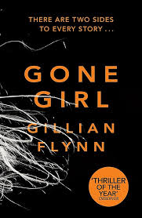

Love, betrayal, and a missing wife. Oh, and plot twists that will make you scream. 🔥
Nick and Amy have the *perfect* marriage… until Amy disappears. 😱 But is Nick the grieving husband, or a lying sociopath? Or is Amy the victim, or the ultimate manipulator? Trust no one. Believe nothing. 🕶️
✔️ If you love **mind games** and **psychological warfare**. ğŸ§
✔️ If you want to be **shocked, confused, and impressed all at once**. 🤯
✔️ If you enjoy reading a book where you **don’t trust a single character**. 😈
(Best read with dramatic background music and a cup of *extreme* suspicion.)
"There’s something disturbing about recalling a warm memory and feeling utterly cold."
"Men always say that as the defining compliment, don’t they? She’s a cool girl. Cool girls never get angry."
"The truth is malleable. You just need to pick the right expert."